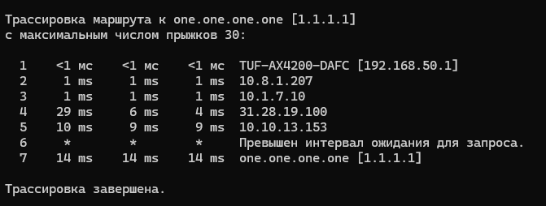
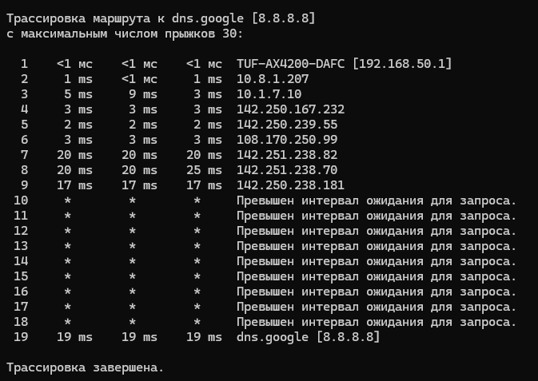
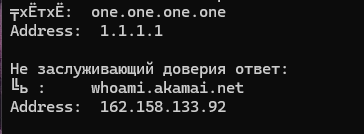
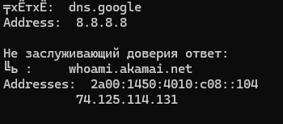
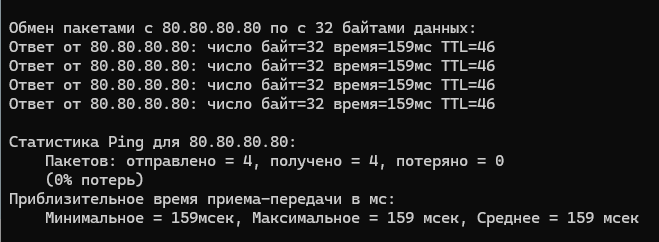
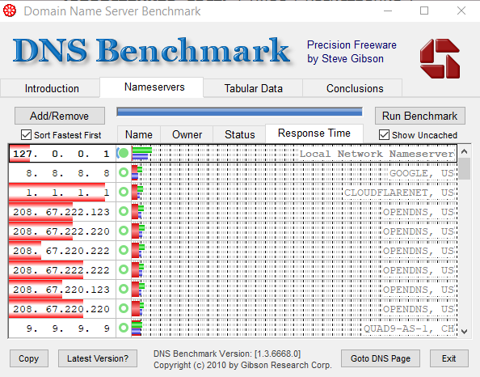
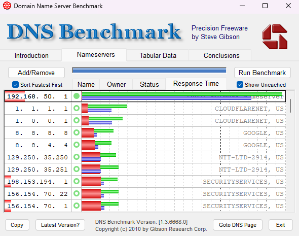

Здравствуйте! Использую стороние DNS на роутере и такой вопрос кто может сталкивался с этим, но почему то когда я использую DNS от Cloudflare и Google, то меня кидает на далекие локации. Я точно знаю что у Cloudflare есть сервера в Питере и Москве, но меня почему то кидает в эти

tracert ом проверьте.
Возможно ответы от DNS из Дании и Финляндии приходят быстрее, чем из МСК/СПБ.


Прогоните
nslookup whoami.akamai.net 1.1.1.1
nslookup whoami.akamai.net 8.8.8.8


Используйте DNS вашего ISP.
Я использую местного провайдера по своему городу Домодедово(Домолан) и у него нету своего dns он использует от Яндекс. Стоит ли его использовать и какое у Вас о нем впечетление?
Видимо, да. Впечатлений нет, т. к. использую DNSCrypt резолверы и релеи уже сдесяток лет. ECS не поддерживается, поэтому приходится либо терпеть больший отклик, либо настраивать необходимые зоны вручную, либо использовать аддон для браузера Decentraleyes.
Тогда посоветуете использовать DNS от Яндекс? Извините пожалуйста за такие вопросы, но скрывать не буду я реально не разбираюсь, а не то что хочу вам проесть мозг
Я бы использовал связку Yandex+Google+Cloudflare
Никто не безупречен и все могут прилечь или быть заблокированы в России в любой момент (зарубежные сервисы), поэтому разумно не полагаться на всего лишь один сервис, а также использовать как отечественный, так и зарубежный. Роутеры обычно отправляют запрос сразу ко всем серверам и используют ответ, который первым пришёл.
Используйте. Если проблема с PUBG Mobile не исчезнет, то всё равно придётся снифать и отлаживать.
У меня можно использовать только 2 DNS сервера
{kind=link}
яндекс вроде пока неплох (в смысле не подменяет адреса как у многих провайдеров грешат)
но имей ввиду их там несколько
базовый /безопасный /семейный
p.s. хотя на фоне новости я лично сказал бы яндексу НЕТ.
С 01.03.2024 г. поддержка протокола DNSCrypt в рамках сервиса «Яндекс DNS» будет прекращена.
Да я не использую DNSCrypt и не когда не использовал. Мне бы обычный базовый подошел бы
Я просто хочу себе подобрать самый быстрый по ответу DNS
80.80.80.80
80.80.81.81

https://www.grc.com/dns/benchmark.htm
Тогда очевидно: отечественный и зарубежный.
В пользу стандартных DoT и DoH.
Все логично: DNSCrypt свою роль сыграл, как пионер шифрования DNS. Интернет-стандартом он не стал, на смену ему пришли DoH и DoT, которые стали стандартами, а DoH ещё и сложнее выявить (трафик DNSCrypt детектируется элементарно).
Яндекс использует в своём браузере кодовую базу Chromium, поэтому им проще поддерживать то, что в ней уже есть, а не тащить дальше собственную поддержку DNSCrypt.
https://www.comss.ru/page.php?id=7359
для меня dnscrypt удобен еще и тем что он сам подбирает сервера из доступных
[2024-04-08 18:45:07] [NOTICE] Sorted latencies:
[2024-04-08 18:45:07] [NOTICE] - 68ms sth-dnscrypt-se
[2024-04-08 18:45:07] [NOTICE] - 75ms dnscry.pt-helsinki-ipv6
[2024-04-08 18:45:07] [NOTICE] - 90ms he
[2024-04-08 18:45:07] [NOTICE] - 91ms nextdns
[2024-04-08 18:45:07] [NOTICE] - 92ms meganerd-ipv6
[2024-04-08 18:45:07] [NOTICE] - 96ms cisco-sandbox
[2024-04-08 18:45:07] [NOTICE] - 113ms cloudflare
[2024-04-08 18:45:07] [NOTICE] - 115ms google
[2024-04-08 18:45:07] [NOTICE] - 125ms cloudflare-ipv6
[2024-04-08 18:45:07] [NOTICE] - 126ms google-ipv6
ожидаемо кроме гугла. они же вроде убирали в РФ cdn/cache сервера

Вот мои результаты 192.168.50.1 это мой роутер с DNS от Яндекс
Тесты производил с выключеным АнтиЗапретом

Ого. Я честно не знал
Я использовал cloudflare и google только тем что у них есть cdn
Что смотрите на то чтобы использовать связку cloudflare и yandex?
77.88.8.8 и 1.1.1.1
ну вот ведь даже несмотря на “далекие локации” 1.1.1.1 почти самый быстрый, 8.8.8.8 еще лучше, и гораздо быстрее чем яндекс который у вас щас стоит
не. один “РФ” днс лучше оставить. всякое бывает. у меня вон несколько дней почти все IPv4 dnscrypt писали TIMEOUT при этом они же по IPv6 работали
хотя и от провайдера зависит многое. могут и вообще все запросы на свои сервера редиректить редиски ;
а еще многие браузеры “сами” лезут по DoH наплевав на настройки системы
p.s. еще неплох (как резерв если с 1.1.1.1 или 8.8.8.8 РКН химичат)
8 97ms 99ms 94ms ipv4.de-cix.fra.de.as42.pch.net [80.81.194.42]
9 98ms 100ms 93ms dns9.quad9.net [9.9.9.9]
Mr.Alex
Вы во первых проверяете где не правильно показывает как обычно, а во вторых я уже наверно неделю борюсь, подбираю днс, задача в том, чтоб не было его тут у нас, так как я заметил, они мутят что там с серверами на нашей стороне и пофиг какой днс, они вмешиваются в его работу, проксируют его куда то и через что то. Добрались уже и до днс ))
Если подбираете для ПК под Windows рекомендую Technitium DNS Server в качестве stub резолвера с настроенными форвардами DNSCrypt:
- Находите штук 6 стабильных DNSCrypt серверов и релеев для вашей ASN
- Конфигурируете 6 инстансов dnscrypt-proxy для использования одного из них:
Часть примера конфигурации dnscrypt-proxy
server_names = ['resolver-name'] listen_addresses = ['[::1]:1153'] cache = false [anonymized_dns] routes = [ { server_name='resolver-name', via=['relay-name'] }, ] [static] # Resolver [static.'resolver-name'] stamp = 'sdns://…' # Relay [static.'relay-name'] stamp = 'sdns://…' - В TDNS заполняете список фовардеров:
Forwarder Concurrency увеличивает потребление трафика, но позволяет избежать ошибки таймаута.
Пример Settings → Proxy & Forwarders → Forwarders
[::1]:1153 [::1]:1253 [::1]:1353 [::1]:1453 [::1]:1553 [::1]:1653 - Патчите dnscrypt-proxy, установив максимальный размер UDP пакета, по причине отсутствия поддержки PMTUD:
Принудительная установка размера UDP пакета для PPPoE соединения в файле common.go
var ( MaxDNSUDPPacketSize = 1472 )
В таком виде GeoDNS не работает, а ECS не поддерживается в dnscrypt-proxy, поэтому при необходимости можно добавить Conditional Forwarder Zone для нужных зон и форфардить их на сервер ISP или второй инстанс TDNS работающий в режиме recursive resolver.
Спасибо конечно, но я использую doh на роуторе. У меня их три и всегда первый отвечает тот, у которого меньше задержка, поэтому важно подобрать последовательность, первый основной, второй на всякий случай, а третий, ну тоже, на всякий случай ) Важно знать и понимать кто это, перед тем как подключится, ведут ли они логи, в общем на кого работают, есть ли у них цензура и фильтрация, в общем стоит ли им доверять. Подобрать не просто, сегодня всё норм, а завтра как всегда, что не будь измениться, особенно когда кому нить настраиваешь роутер, потом опять переделывать. Радует одно, что в 98% пользователей пользуются обычным днс от провайдера, они даже не знают что это, думают что магазин, поэтому на первом плане у них не стоит что глушить, хватает с головой и этих пользователей, на них и ставка. Все эти 98% понятия не имеют что такое комп, даже если он у них есть, вся их жизнь в телефоне, выключи им тлефон и будут бегать как потерянные дети ))
Подскажите, пожалуйста
Влияет ли DNS на подбор сервера в онлайн играх? Конкретно я играю в игру PUBG MOBILE на iOS
Я использую DNS от Cloudflare и меня кидает в локации Дания, Швеция, Амстердам
Если поставить DNS от Яндекс то будет различие в играх? Игра не выдает ближайший сервер по GeoDNS?
В большинстве случаев нет. Поставьте и проверьте, это быстрее будет, чем писать на форуме и ждать ответа.
Я это предположил, поскольку вы проблему описали изначально в теме антизапрета, из чего я сделал вывод, что без антизапрета локация выбирается без проблем.
просто я ламер и спрашиваю мнение у экспертов